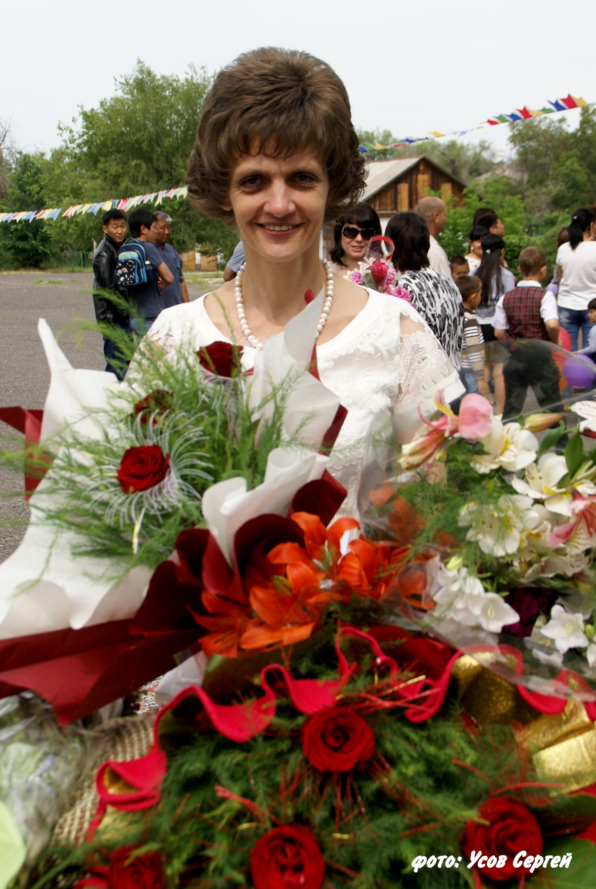

МЫ РАДЫ ПРИВЕТСТВОВАТЬ ВАС НА НАШЕМ САЙТЕ
О ШКОЛЕ
Директором школы является
Дебелая Елена Николаевна
Дебелая Елена Николаевна

В школе имеется 2 здания: основное здание и здание начальной школы
Основное здание было построено в 1953 году
Здание начальной школы построено в 1956 году
В школе обучается _ учащихся
В школе работают 32 педагога
Техническое состояние школы удовлетворительное
Занятия ведутся в 1 смену
В школе работает общественное объединение «Попечители средней школы-гимназии №6 г.Кара-Балта»
Здание начальной школы
Основное здание школы
НАШИ ДОСТИЖЕНИЯ
2009 - 2010 год - республиканский конкурс «Лучшая школа инновационного типа» - 2 место
2015 год - республиканский конкурс «Лучшая школа инновационного типа» - 2 место
12 учителей прошли обучение по программе «Развитие критического мышления через чтение и письмо» в рамках проекта PEAKS
Школа дважды (2009, 2010 год) была награждена грамотой президента КР «За хорошую подготовку учащихся к республиканской олимпиаде школьников»
Школа является победителем областного конкурса по подготовке школ к новому учебному году
Золотые сертификаты ОРТ получили 20 выпускников школы
Ежегодно учащиеся школы принимают участие в республиканской олимпиаде школьников и являются ее победителями и призерами по английскому языку, русскому языку, французскому языку, немецкому языку, ИВТ, истории, математике, физике
ПОЧЁТНЫЕ ЗВАНИЯ ШКОЛЫ
Звание «Отличник образования КР» - 15 человек
Почетная грамота Министерства образования и науки КР - 17 человек
4 учителя являются руководителями районных методических объединений (русский язык, английский язык, история и курс «Человек и общество», физическая культура)
ТЕХНИЧЕСКОЕ ОСНАЩЕНИЕ ШКОЛЫ
В школе все кабинеты оснащены компьютерами, телевизорами и DVD
Имеется компьютерный кабинет. 7 компьютеров и стационарная мебель получены по проекту "МЕГАБИЛИМ" в 2012 году. Также имеется еще 6 компьютеров, полученных по проекту Министерства образования и науки КР в 2008 году
Имеются 11 стационарных компьютеров в кабинетах английского языка, русского языка и литературы, географии, истории, химии, физики, кыргызского языка
Школа имеет доступ к Интернету
В школе имеются оборудованные кабинеты химии, физики, биологии и соответствующие лаборатории. Кабинет химии оборудован вытяжным шкафом и водопроводом. В наличии имеется оборудованная лаборатория в кабинете физики
ПЕДАГОГИЧЕСКИЙ СТАЖ:
От 5 до 10 лет - 3 педагога
Свыше 10 лет - 1 педагог
Свыше 15 лет - 4 педагога
Свыше 20 лет - 8 педагогов
Свыше 25 лет - 7 педагогов
Свыше 30 лет - 9 педагогов
КВАЛИФИКАЦИЯ ПЕДАГОГОВ ШКОЛЫ:
Высшей квалификации - 27 педагогов
I квалификации - 3 педагога
II квалификации - 1 педагог
Учитель -1 педагог
ПРОФЕССИОНАЛЬНОЕ РАЗВИТИЕ УЧИТЕЛЕЙ
6 учителей школы являются разработчиками национального куррикулума
6 учителей начальных классов прошли обучение по программе «Шаг за шагом» и используют данную методику на практике
12 учителей прошли обучение по программе «Развитие критического мышления через чтение и письмо» в рамках проекта PEAKS
5 учителей прошли обучение по программе «Улучшение школы» в рамках проекта PEAKS
4 учителя прошли обучение по программе «Инклюзивное образование» в рамках проекта PEAKS
3 учителя прошли обучение по программе «Социальное партнерство» в рамках проекта PEAKS
2 учителя прошли курсы повышения квалификации в Санкт-Петербургской Академии права и бизнеса по программе ”Создание инновационной среды в общеобразовательном учреждении”
2 учителя прошли стажировку в США по программе «Партнерство в образовании»
1 учитель прошел стажировку в Индии по программе «Кадры 21 века»
2 учителя являются авторами учебных пособий по английскому языку и истории
3 доклада учителей школы признаны лучшими на Республиканских педагогических чтениях
ПРОГРАММА FLEX (ОБУЧЕНИЕ В США)
Ежегодно учащиеся школы являются победителями программы FLEX (обучение в США). За время существования программы 36 учеников прошли обучение в США.
ПРИОРИТЕТЫ РАЗВИТИЯ ШКОЛЫ
Укрепление кадрового обеспечения, повышение уровня квалификации педагогического состава, привлечение к научно-педагогической деятельности
Совершенствование содержания и технологий, учебно-методического обеспечения образовательных программ инновационного типа
Развитие материально-технической базы школы, удовлетворяющей потребностям образовательной, научной и воспитательной деятельности
Сохранение и развитие традиций школы, совершенствование воспитательной и социальной среды школы, работы с талантливой молодёжью